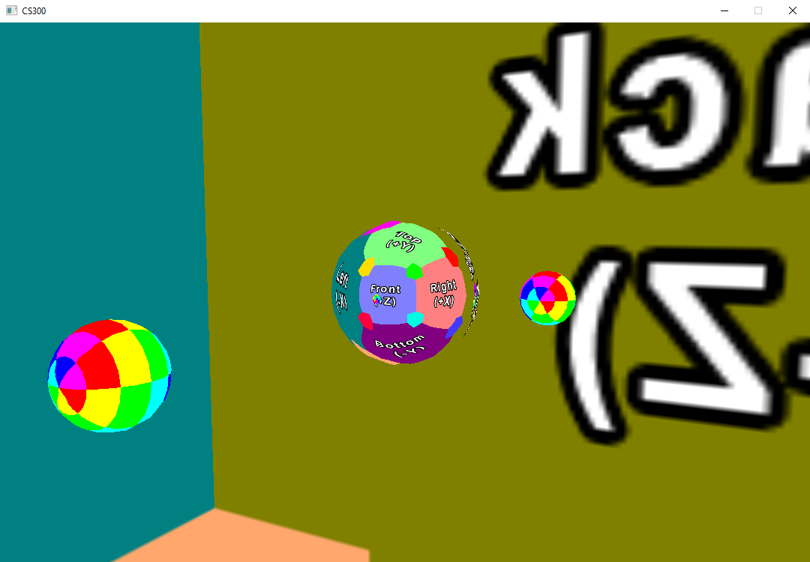
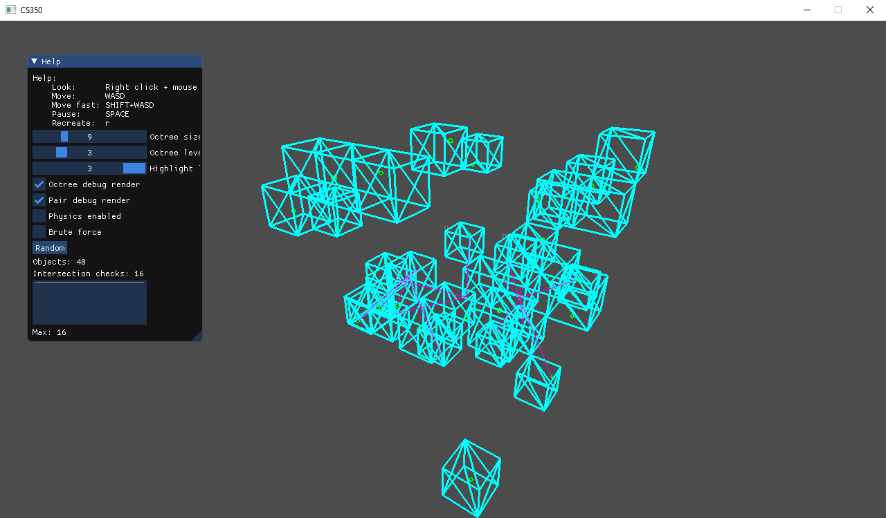

<!DOCTYPE html>
<html lang="en">
<head>
<title>Gaizka Calvo Gameplzay programmer</title>
<meta charset="UTF-8">
<meta name="viewport" content="width=device-width, initial-scale=1">
<style>
* {
  box-sizing: border-box;
}

/* Style the body */
body {
  font-family: Arial, Helvetica, sans-serif;
  margin: 0;
}

/* Header/logo Title */
.header {
  padding: 20px;
  text-align: center;
  /*background: #888c8d;*/
  /*background-color: rgb(0, 0, 128);*/
  background-color: rgb(40, 40, 40);
  color: white;
}

/* Increase the font size of the heading */
.header h1 {
  font-size: 80px;
}

/* Sticky navbar - toggles between relative and fixed, depending on the scroll position. It is positioned 
relative until a given offset position is met in the viewport - then it "sticks" in place (like position:fixed).
 The sticky value is not supported in IE or Edge 15 and earlier versions. However, for these versions the navbar will inherit default position */
.navbar {
  overflow: hidden;
  background-color: #333;
  position: sticky;
  position: -webkit-sticky;
  top: 0;
}

/* Style the navigation bar links */
.navbar a {
  float: left;
  display: block;
  color: white;
  text-align: center;
  padding: 14px 20px;
  text-decoration: none;
}

/* Change color on hover */
.navbar a:hover {
  background-color: #ddd;
  color: black;
}

/* Active/current link */
.navbar a.active {
  background-color: #666;
  color: white;
}


/* Fake image, just for this example */
.fakeimg {
  background-color: #aaa;
  width: 100%;
  padding: 20px;
}

/* Footer */
.footer {
  padding: 20px;
  text-align: center;
  background: #ddd;
}

/* Main column */
.main {   
  background-color: white;
}

.in_middle{
  text-align: center;
}

.text_at_right_image{
  margin-left:  940px;
  margin-right: 500px;
  margin-top: -50px;
  text-align:justify;
}

.title_font{
  font-size: 30px;
}
.description_font{
  margin-top: -25px;
  font-size: 20px;
}


.image_column {
    margin-top: 80px;
    margin-left: 500px;
    width: 400px;
    height: 0px;/* heigth q se le da a la imagen, si es mas peque;a el texto se escribe por encima */
}

.button {
  display: inline-block;
  padding: 10px 25px;
  font-size: 24px;
  cursor: pointer;
  text-align: center;
  text-decoration: none;
  outline: none;
  color: #fff;
  background-color: #333;
  border: none;
  border-radius: 15px;
  box-shadow: 0 9px #999;
}
/*hover para cuando el raton esta encima*/
.button:hover {
  background-color: #666}
/*active para cuando el raton clicka en el boton*/
.button:active {
  background-color: #666;
  box-shadow: 0 5px rgb(146, 146, 146);
  transform: translateY(4px);
}

/* Responsive layout - when the screen is less than 400px wide, make the navigation links stack on top of each other instead of next to each other */
@media screen and (max-width: 400px) {
  .navbar a {
    float: none;
    width: 100%;
  }
}
</style>
</head>
<body>

<div class="header">
  <h1>Gaizka Calvo</h1>
  <p>A <b>responsive</b> website created by me.</p>
</div>

<div class="navbar">
  <a href="About_me.html"                           > About me</a>
  <a href="Games.html"                              > Games</a>
  <a href="Personal_project.html"   class="active " > Personal projects</a>
</div>

<div class = "main">
<div class = "in_middle title_font"> <h1>Personal projects</h1> </div>
  
  <div class = "image_column">
    
  </div>

  <div class = "text_at_right_image">
    <div class = "title_font"><h2>Computer grapichs framework</h2></div>
    <div class = "description_font">
      <p>
        Rendering techniques implemented such as texturing,
        illumination models, transparency, shading algorithms,
        mapping techniques (bump mapping,
        environment/reflection mapping, etc.), and shadows.
        
      </p>
      
      <a href="About_me.html" class="button separation1"  >See more</a> 
    </div>
  </div>

  <br><br><br><br><br><br>

  <div class = "image_column">
    
  </div>

  <div class = "text_at_right_image">
    <div class = "title_font"><h2>Space partitioning framework</h2></div>
    <div class = "description_font">
      <p>
        Implementations to avoid bottlenecks in the CPU and GPU
        such as some spacial data structures (octrees and kdtrees), the construction of bounding volumes and their
        hierarchies for collision detection and the GJK method.
      </p>
      
      <a href="About_me.html" class="button separation1"  >See more</a> 
    </div>
  </div>

    <br><br><br><br><br>

  <div class = "image_column">
    
  </div>

  <div class = "text_at_right_image">
    <div class = "title_font"><h2>Neural network</h2></div>
    <div class = "description_font">
      <p>
        Implemented Neural Network and then applied the
        technique of Deep Q-Learning to make an AI learn to play
        the game Snake.
      </p>
      
      <a href="About_me.html" class="button separation1"  >See more</a> 
    </div>
  </div>
  
  <br><br><br><br><br><br><br><br><br><br><br>
  
</div>

<div class="footer">
  <h3>Email: gaizkablusti@gmail.com</h3>
</div>

</body>
</html>